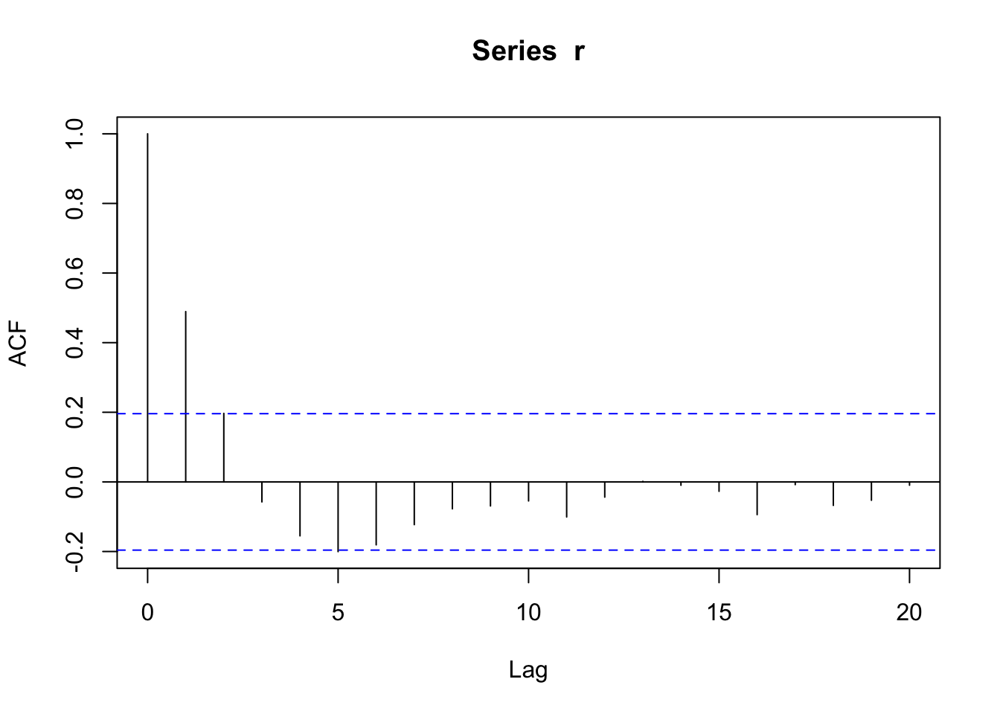

Financial time series, such as asset prices, exchange rates, and interest rates, are fundamental in econometric analysis. Unlike prices, returns are more commonly used due to their desirable statistical properties, such as stationarity and scale independence. This chapter will explore various aspects of financial returns.
g# We transform prices to returns
In financial econometrics, the focus on analyzing returns rather than prices is both theoretically and practically driven. Here’s a detailed explanation based on the book Andrew W. Lo and MacKinlay (1997)
4.1 Theoretical Reasons
Stationarity: Financial time series of prices are typically non-stationary, meaning their statistical properties (like mean and variance) change over time. This non-stationarity violates the basic assumptions of many econometric models. Returns, calculated as the percentage change in prices, are more likely to be stationary. Stationary data is crucial for applying many statistical and econometric techniques, as it ensures that the model’s parameters are constant over time.
Difficulties with Non-Stationary Data: Working with non-stationary data can lead to spurious regression problems, where relationships between variables appear significant even when they are not. Returns typically exhibit weaker forms of non-stationarity compared to prices, reducing the risk of such misleading results.
Economic Theory Alignment: Returns represent the reward for bearing risk, which is a fundamental concept in financial economics. Analyzing returns aligns more closely with economic theories that focus on risk and reward, such as the Capital Asset Pricing Model (CAPM) and Efficient Market Hypothesis (EMH).
Volatility Modeling: Returns facilitate the modeling of volatility, a key aspect in financial markets. Models like GARCH (Generalized Autoregressive Conditional Heteroskedasticity) are designed to capture the volatility clustering often observed in returns, which is not as apparent when analyzing prices directly.
4.2 Transaction Costs
Round Trip Transaction Costs: This concept usually refers to the total costs incurred in completing a full investment cycle – buying and then subsequently selling a financial asset. These costs include brokerage fees, bid-ask spreads, taxes, and other transaction expenses.
Impact on Returns Analysis: When considering round trip transaction costs in the context of financial markets, it’s important to analyze returns rather than prices. This is because the actual return on an investment needs to account for these costs. For instance, even if an asset’s price appreciates, the net return might be lower (or even negative) after accounting for transaction costs.
Modeling and Risk Assessment: In econometric models, incorporating transaction costs is crucial for realistic risk and return assessments. These costs can significantly impact the viability and attractiveness of trading strategies, especially those involving frequent transactions.
Behavioral Implications: Transaction costs also influence investor behavior. High costs might deter frequent trading, thereby affecting the liquidity and price volatility of assets.
4.3 Practical Reasons
Comparability: Returns standardize the performance across different assets, allowing for meaningful comparisons. For instance, a $5 increase in a $10 stock is a 50% return, whereas the same $5 increase in a $100 stock is only a 5% return. Analyzing prices would not capture this difference in performance.
Simplicity in Modeling: Modeling returns simplifies the mathematical complexity involved in dealing with non-stationary price series. This simplification allows for more straightforward interpretation and application of models.
Risk Management: In financial risk management, the focus is often on the variability of returns (i.e., risk) rather than absolute price levels. Analyzing returns directly aligns with this focus, aiding in the development of risk management strategies.
Efficient Market Considerations: In efficient markets, it is believed that all available information is already reflected in current prices. Therefore, the focus is on changes in prices (returns), which reflect new information, rather than on the price levels themselves.
5 Asset Returns
5.1 One-Period Simple Returns
Simple returns represent the percentage change in asset price over a single period and are calculated as follows:
\[ R_t = \frac{P_t - P_{t-1}}{P_{t-1}} \]
where ( R_t ) is the return at time ( t ), ( P_t ) is the price at time ( t ), and ( P_{t-1} ) is the price at time ( t-1 ).
library(tsfe)
Loading required package: tidyverse
── Attaching core tidyverse packages ──────────────────────── tidyverse 2.0.0 ──
✔ dplyr 1.1.4 ✔ readr 2.1.5
✔ forcats 1.0.0 ✔ stringr 1.5.1
✔ ggplot2 3.4.4 ✔ tibble 3.2.1
✔ lubridate 1.9.3 ✔ tidyr 1.3.1
✔ purrr 1.0.2
── Conflicts ────────────────────────────────────────── tidyverse_conflicts() ──
✖ dplyr::filter() masks stats::filter()
✖ dplyr::lag() masks stats::lag()
ℹ Use the conflicted package (<http://conflicted.r-lib.org/>) to force all conflicts to become errors
# Assuming 'prices' is a vector of asset pricesprices<-monte_carlo_paths()prices<-filter(prices, possible_path_no==1)returns <-na.omit(diff(prices$sample_path)) /lag(prices$sample_path, 1)
Warning in na.omit(diff(prices$sample_path))/lag(prices$sample_path, 1): longer
object length is not a multiple of shorter object length
returns <-na.omit(returns)
5.2 Multiperiod Simple Returns
For multiple periods, simple returns are compounded. The formula for a return over ( n ) periods is:
# To calculate multiperiod returnsmultiperiod_return <-prod(1+ returns) -1
5.3 Time Interval Considerations
The time interval of returns (daily, monthly, yearly) significantly impacts their magnitude and volatility. Annualizing returns involves scaling them to a yearly basis, usually by multiplying (for simple returns) or exponentiation (for log returns) by the number of periods per year.
daily_return <- returns# Annualizing daily returns (assuming 252 trading days in a year)annualized_return <- (1+ daily_return) ^252-1
5.4 Continuously Compounded Returns
Continuously compounded, or log returns, are computed as the natural logarithm of the price ratio:
\[ r_t = \ln\left(\frac{P_t}{P_{t-1}}\right) \]
Log returns are time-additive, making them suitable for multi-period returns calculation and econometric modeling.
Excess return is the return of an asset over and above a benchmark or risk-free rate, crucial in risk-adjusted performance analysis.
\[ R_{excess} = R_{asset} - R_{benchmark} \]
5.8 Bond Yields and Prices
Here is an expansion of the Bond Yields and Prices section with more details and examples on the sub-topics:
5.9 Bond Yields and Prices
Bonds are debt instruments issued by governments, municipalities, and corporations to raise capital. Key bond features include:
5.9.1 Coupon Rate
The coupon rate is the periodic interest rate paid on the par value, typically semiannually. It represents an annual percentage yield to the investor based on invested capital. Coupon payments are calculated as:
The maturity date determines the bond’s term or tenor. Longer-dated bonds generally pay higher yields to compensate investors for reduced liquidity and higher interest rate risk over time. Maturity also impacts the relationship between price and yield.
5.9.3 Factors Impacting Yields
Several factors determine the base yield investors demand on bonds:
Credit Risk - Probability that principal and interest will not be repaid as obligated. Lower rated bonds offer higher yields to offset higher default risk.
Time to Maturity - As discussed, longer maturities require higher yields.
Tax Treatment - Tax exemptions for municipal bonds allow them to pay lower pre-tax yields.
Liquidity - Easier tradability allows lower yields to compensate for reduced risk.
Interest Rates - Prevailing rates determine a baseline for yield levels across bonds.
For example, 10-year BBB corporate bonds currently offer higher yields than 10-year Treasuries due to higher credit risk:
library(quantmod)
Loading required package: xts
Loading required package: zoo
Attaching package: 'zoo'
The following objects are masked from 'package:base':
as.Date, as.Date.numeric
######################### Warning from 'xts' package ##########################
# #
# The dplyr lag() function breaks how base R's lag() function is supposed to #
# work, which breaks lag(my_xts). Calls to lag(my_xts) that you type or #
# source() into this session won't work correctly. #
# #
# Use stats::lag() to make sure you're not using dplyr::lag(), or you can add #
# conflictRules('dplyr', exclude = 'lag') to your .Rprofile to stop #
# dplyr from breaking base R's lag() function. #
# #
# Code in packages is not affected. It's protected by R's namespace mechanism #
# Set `options(xts.warn_dplyr_breaks_lag = FALSE)` to suppress this warning. #
# #
###############################################################################
Attaching package: 'xts'
The following objects are masked from 'package:dplyr':
first, last
Loading required package: TTR
Registered S3 method overwritten by 'quantmod':
method from
as.zoo.data.frame zoo
Sure, here is an expansion on the different bond categories:
5.9.5 Bond Categories
There are a few major categories of bonds:
Treasury Bonds - Issued by the federal government and considered essentially default risk-free. Treasuries make up the largest single debt market and serve benchmark pricing and yield roles. Different types are distinguished by maturity:
Treasury bills - Maturities less than 1 year
Treasury notes - 2 to 10 year maturities
Treasury bonds - Over 10 years
Municipal Bonds - Issued by state and local governments to finance public infrastructure projects. Key features include tax exemption and thus lower yields along with higher default risk than federal government:
Corporate Bonds - Debt issued by corporations and are categorized by credit ratings. Investment-grade bonds (BBB-or higher rating) offer modest yields while high-yield “junk” bonds pay much higher yields due to elevated default risk.
Mortgage Bonds – Debt collateralized by pools of mortgage loans with interest and principal used to make payments.
In terms of total volume outstanding in the US, Treasury and corporate bonds have the greatest market size followed by mortgage-related and municipal securities. Understanding differences across bond categories assists with portfolio allocation and relative value comparisons.
5.10 Implied Volatility
Here is an expanded Implied Volatility section with more details and R code examples:
5.11 Implied Volatility
Volatility measures how rapidly an asset’s price moves. It is a key input in options pricing models.
5.11.1 Options Pricing Basics
Options give holders the right, but not the obligation, to buy or sell the underlying asset by the expiration date at a pre-determined price (strike price). In return, buyers pay an upfront premium. Two types exist:
Call Options: Right to buy the asset
Put Options: Right to sell the asset
For instance, a stock call option may have a $100 strike with $5 premium.
The classic Black-Scholes formula prices options based on current stock price, strike price, volatility, risk-free rate, and time to expiration.
# Black-Scholes Call Option ExampleS <-100# Asset price K <-100# Strike pricesigma <-0.3# Volatility r <-0.01# Risk-free rate t <-1# Years til expiration d1 <- (log(S/K)+(r+sigma^2/2)*t) / (sigma*sqrt(t)) d2 <- d1 - sigma*sqrt(t)call_price <- S *pnorm(d1) - K *exp(-r * t) *pnorm(d2)print(paste("Call Price:", round(call_price, 2)))
[1] "Call Price: 12.37"
5.11.2 Implied Volatility
Rather than estimating volatility based on historical prices, implied volatility uses the known market price and inverts the options pricing model to solve for volatility. It represents the market’s forward-looking expectation of volatility over the option’s life.
library(tsfe)# Market parametersS <-100# Current stock priceK <-100# Strike priceT <-1# Time to maturity in yearsr <-0.05# Risk-free interest rateq <-0# Dividend yieldmarket_price <-4# Actual call price observed in the market# Calculate implied volatility using the BlackScholes function from MyFinancePackageimplied_vol <-uniroot(function(x) BlackScholes("call", S, K, T, r, x, q) - market_price, interval =c(0.01, 5))$rootprint(paste("Implied Volatility:", round(implied_vol *100, 2), "%"))
5.11.3 Explanation:
BlackScholes Function: This function is defined to calculate the price of a call option based on the Black-Scholes model. It takes the current stock price (S0), strike price (K), time to maturity (T), risk-free interest rate (r), volatility (sigma), and dividend yield (q) as inputs.
Market Parameters: These variables represent the conditions under which you’re trying to find the implied volatility. S is the current stock price, K is the strike price, T is the time to expiration in years, r is the risk-free interest rate, and q is the dividend yield. market_price is the observed market price of the call option.
Implied Volatility Calculation: The uniroot function finds the volatility value that, when used in the BlackScholes function, results in the option price matching the market price of the call option. The interval = c(0.01, 5) argument specifies the search interval for the volatility (from 1% to 500%). Adjust this interval based on your market expectations and the typical volatility range of the underlying asset.
Print Statement: Finally, the calculated implied volatility is printed out as a percentage with two decimal places.
Comparing implied volatility vs. historical volatility shows when options may be relatively expensive or cheap based on realized volatility. The CBOE Volatility Index (VIX) takes this concept further by aggregating implied volatility across S&P 500 index options to measure broad market volatility expectations.
5.11.4 CBOE Volatility Index (VIX)
The VIX represents the market’s consensus expectation for S&P 500 volatility over the next 30 days based on SPX option prices. Known as the “fear gauge,” it enables trading volatility directly:
Rather than a direct index, the VIX allows trading volatility expectations through VIX futures contracts and VIX-linked ETFs and ETNs. Monitoring the VIX shows when traders anticipate unstable markets compared to realized volatility. Comparing VIX levels to historical averages provides context on volatility regime shifts.
6 Overlapping Returns and Autocorrelation
A common approach in empirical asset pricing research involves using time-series data of asset returns. For example, a researcher may collect daily stock return data over several years to study predictive signals, risk factors, or other relationships. However, the use of overlapping multiperiod returns can introduce statistical complications Andrew W. Lo and MacKinlay (1990).
The issue arises because adjacent return observations share common days, inducing autocorrelation in the time-series data. For instance, 20-day returns with a 1-day shift comprise 19 identical daily returns. This overlap across return intervals leads to spurious correlation, violating assumptions of independently and identically distributed (i.i.d) observations under classical statistical models.
Consequences include biased coefficient estimates, understated standard errors, and over-rejection of null hypotheses during hypothesis testing. In effect, the observed sample size overstates the effective size for calculating precision and confidence levels. The series appears to contain more information than is actually present.
Consider the simulated autocorrelated return process:
set.seed(1) r <-arima.sim(model=list(ar=0.5), n=100)acf(r)

Regressing another random series x onto r yields biased estimates and t-stats:
x <-rnorm(100) y <- x + r +rnorm(100)summary(lm(y ~ x))
Call:
lm(formula = y ~ x)
Residuals:
Min 1Q Median 3Q Max
-3.8639 -0.8560 0.0053 1.0721 3.8671
Coefficients:
Estimate Std. Error t value Pr(>|t|)
(Intercept) 0.2624 0.1483 1.769 0.08 .
x 0.9920 0.1483 6.687 1.41e-09 ***
---
Signif. codes: 0 '***' 0.001 '**' 0.01 '*' 0.05 '.' 0.1 ' ' 1
Residual standard error: 1.483 on 98 degrees of freedom
Multiple R-squared: 0.3133, Adjusted R-squared: 0.3063
F-statistic: 44.72 on 1 and 98 DF, p-value: 1.407e-09
There are several potential approaches for handling overlapping data:
Utilize non-overlapping returns - e.g. annual instead of monthly. This eliminates overlap bias but reduces sample size considerably.
r<-tibble(r)slices<-seq(1, nrow(r), 12)r_annual <- r |>slice(slices)
Model the autocorrelation structure like an ARMA process. Specify this correlation during estimation for properly adjusted estimates and standard errors. However, this relies on correctly specifying the autocorrelation structure.
ar1 <-arima(y, xreg=x, order=c(1,0,0))
Employ statistical techniques robust to certain autocorrelation structures, such as heteroskedasticity and autocorrelation (HAC) corrections to standard errors. For example, Newey-West standard errors.
library(lmtest)library(sandwich) r <-arima.sim(model=list(ar=0.5), n=100)x <-rnorm(100)y <- x + r +rnorm(100)mod <-lm(y ~ x)coeftest(mod, vcov =NeweyWest(mod))
t test of coefficients:
Estimate Std. Error t value Pr(>|t|)
(Intercept) 0.057822 0.191822 0.3014 0.7637
x 0.973118 0.125354 7.7629 8.101e-12 ***
---
Signif. codes: 0 '***' 0.001 '**' 0.01 '*' 0.05 '.' 0.1 ' ' 1
Overlapping returns has relevance in many empirical finance settings but warrants additional consideration during econometric modeling and analysis. Failing to account for the induced autocorrelation can undermine results and conclusions. For example, Richardson and Smith (1991) investigate daily stock return regressions and find that positive autocorrelation from overlapping intervals can falsely indicate significant predictability when the true process contains only white noise.
6.1 References
Lo, Andrew W., and A. Craig MacKinlay. 1997. The Econometrics of Financial Markets. Princeton University Press.
Lo, Andrew W, and A Craig MacKinlay. 1990. “An Econometric Analysis of Nonsynchronous Trading.”Journal of Econometrics 45 (1-2): 181–211.
Richardson, Matthew, and Tom Smith. 1991. “Tests of Financial Models in the Presence of Overlapping Observations.”The Review of Financial Studies 4 (2): 227–54.